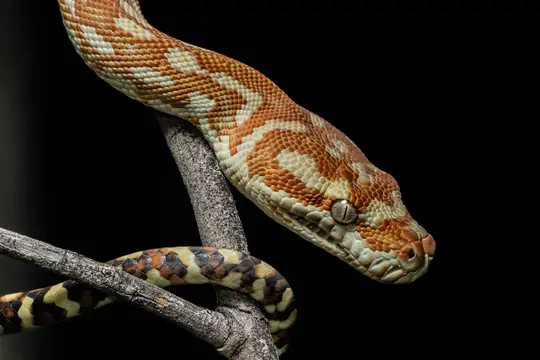
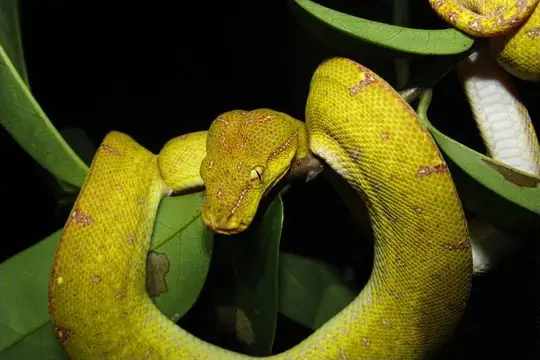
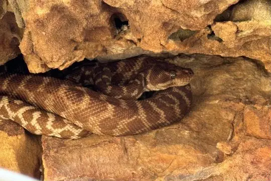
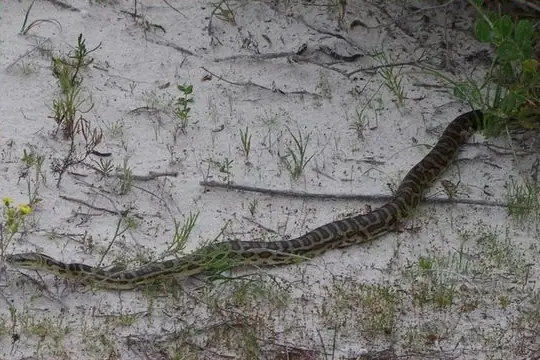

Morelia
The genus Morelia (family Pythonidae) has 9 species in SnakeList (none venomous), recorded in 3 countries.
- 9species
- 9non-venomous
- 3countries
About the genus
A genus of the family Pythonidae (pythons).
Species
Showing 9 species
 Carpet PythonMorelia spilota
Carpet PythonMorelia spilota
Centralian Carpet PythonMorelia bredli
Green PythonMorelia azurea Green Tree PythonMorelia viridis
Green Tree PythonMorelia viridis
Rough-scaled PythonMorelia carinata
Western Carpet PythonMorelia imbricata- Known from fossilsMorelia antiqua
- No photo yetMorelia kinghorni
- Known from fossilsMorelia riversleighensis
No snakes in Morelia match.
About the genus Morelia
- Family: Pythonidae.
- Recorded in: Australia, Indonesia, Papua New Guinea.